No student should fall behind because nobody noticed.
Most students in India learn without a tutor, a coach, or anyone at home who can explain the next step. We are building that help for them.
See how it works- Class 10 · MathsPair of linear equations in two variablesWrong answer
- Class 9 · MathsLinear equations in two variables
- Class 7 · MathsSimple equations
- Class 6 · MathsFractionsThe gap
Find what each student missed, and help them build from there.
Not a shortcut to marks. A patient tutor that notices where understanding broke, goes back to that idea, and helps the student climb back up.
When they understand, they move forward with confidence.
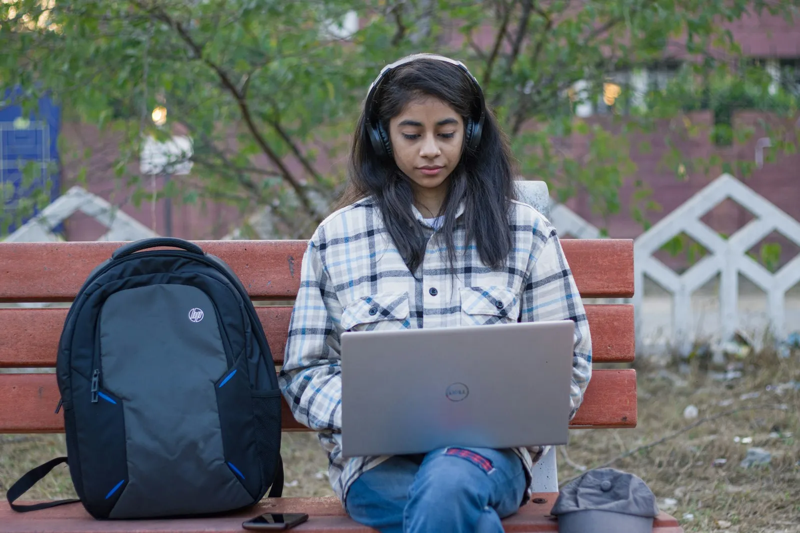
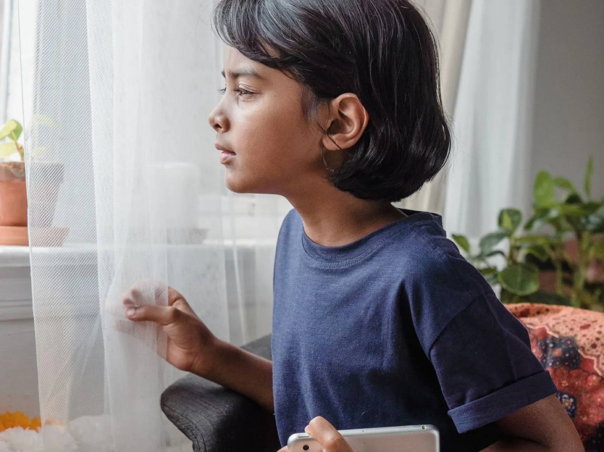
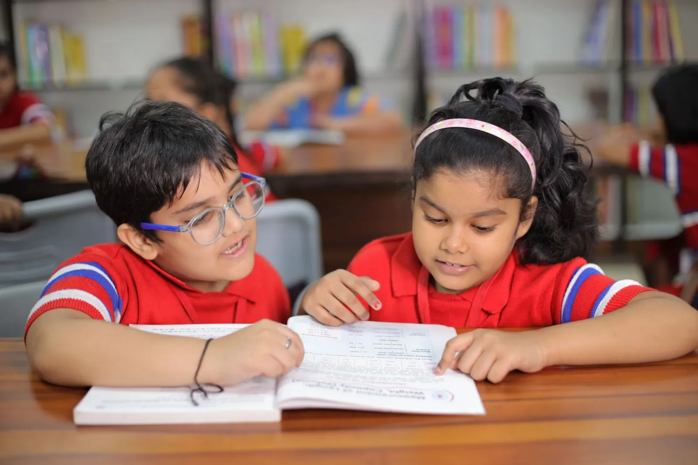
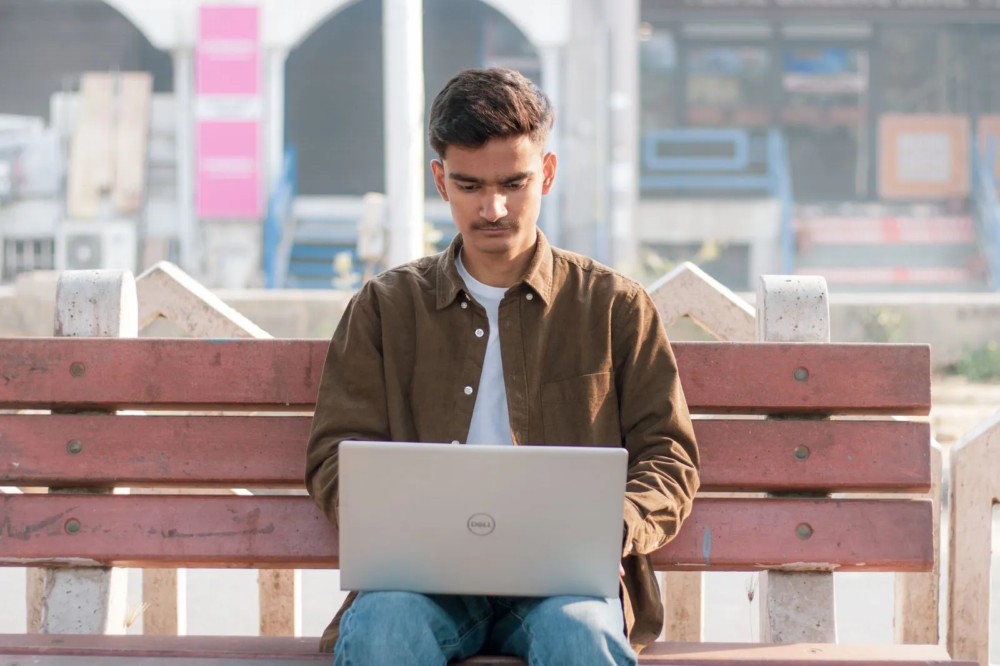
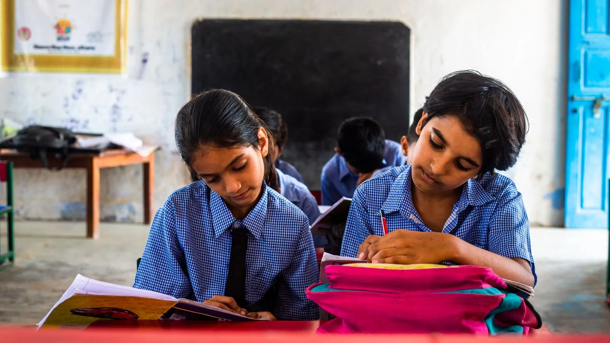
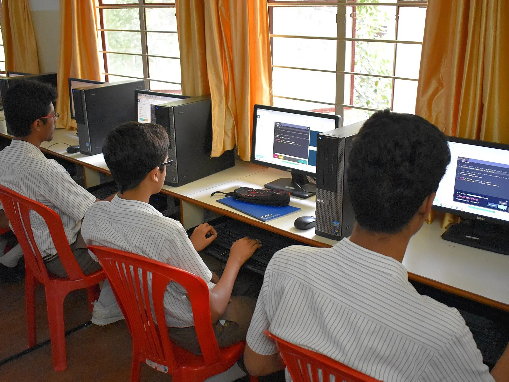
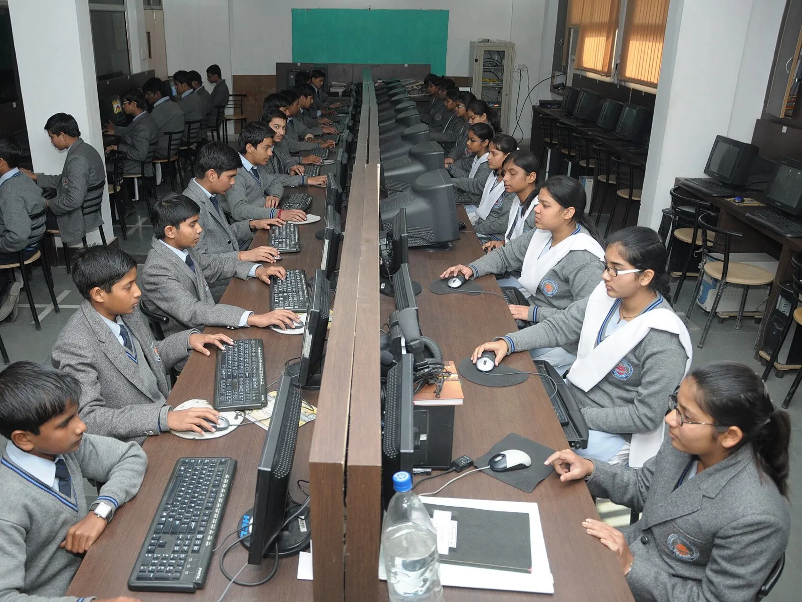
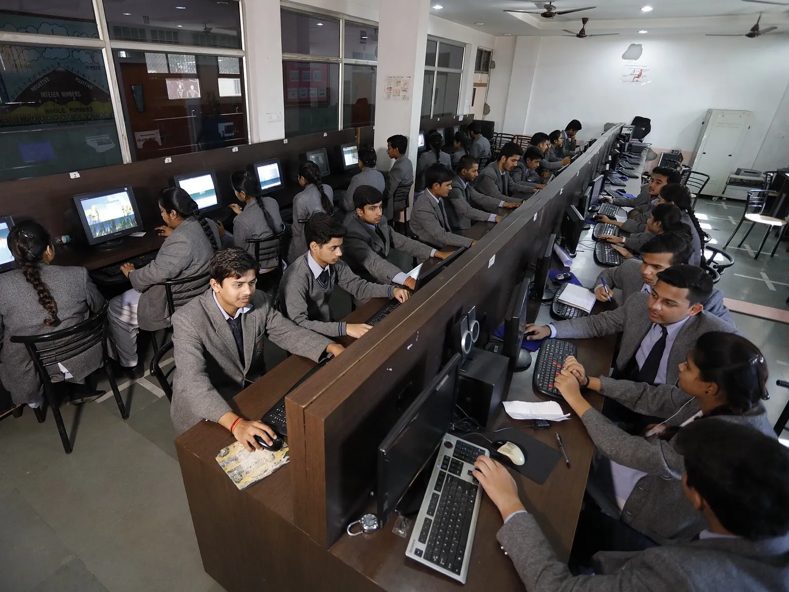
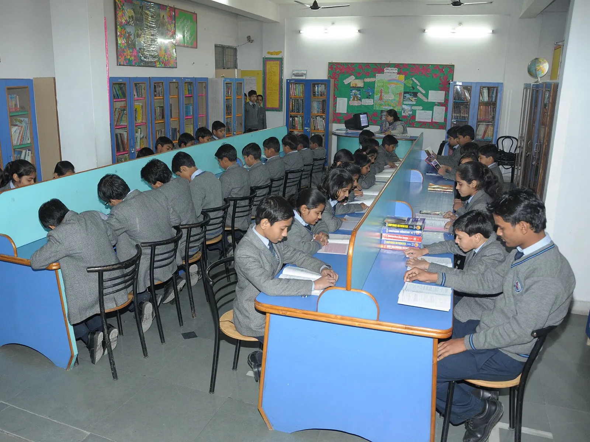
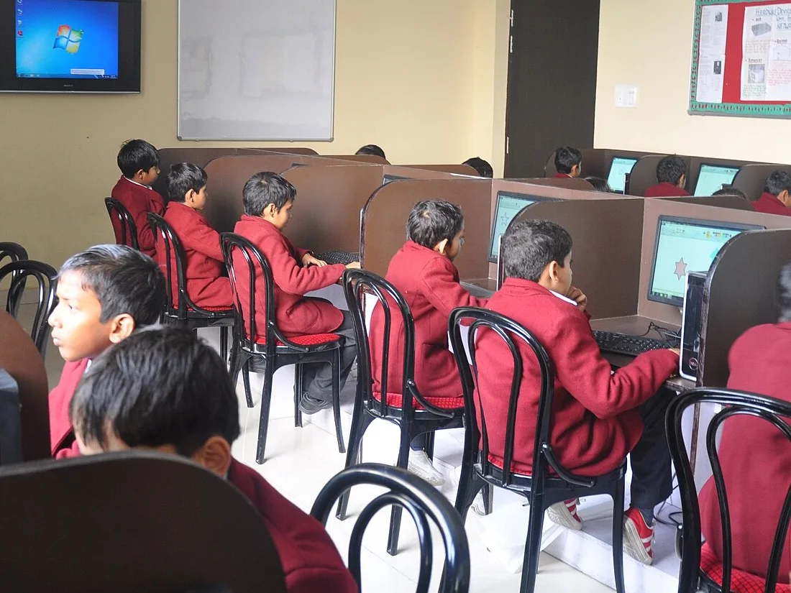
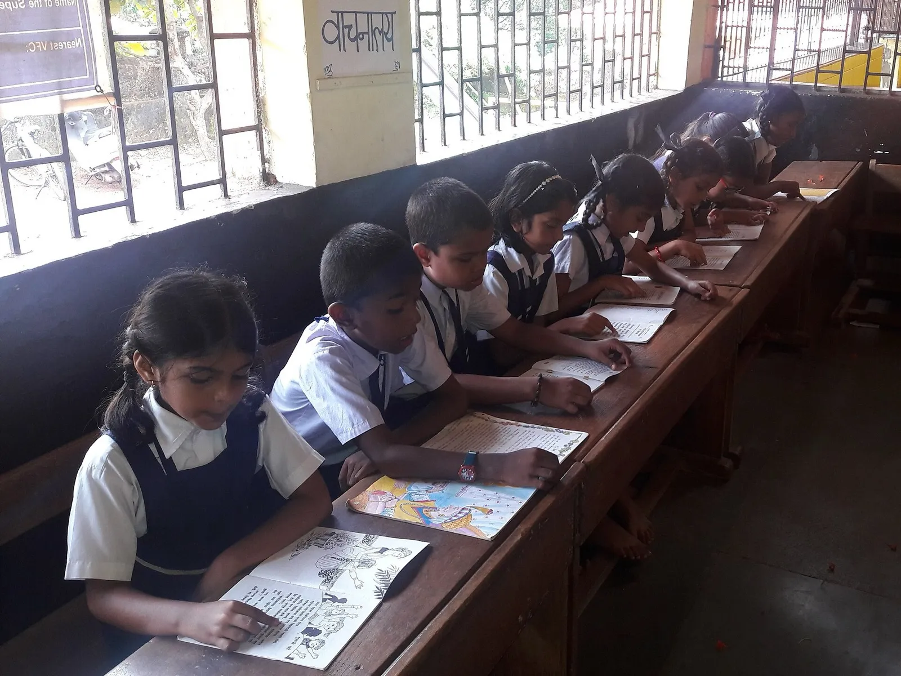
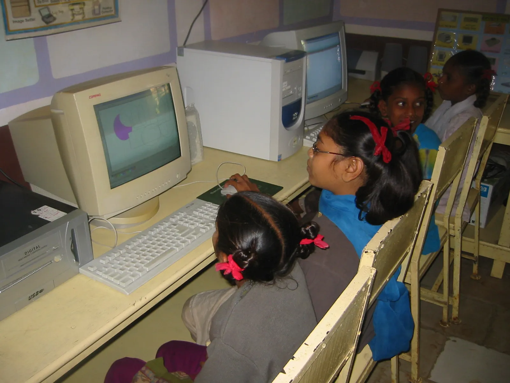
The students in these photos do not use Gyanz and do not endorse it.
How we will get there.
Start with the book they already have.
Gyanz starts with Class 10 Science. Every note and question is written from the NCERT textbook, and checked against it.
Talk the way they think.
Gyanz works in English or Hinglish, one small step at a time.
Be honest about where we are.
Gyanz is in pilot, built by a team of Class 10 students. Today it is an app for computers, and the tutor runs on an AI account the parent pays for. Reaching students without a computer, or without that money, is the part of our mission still ahead.
Who we are building it for.
We are building Gyanz for students who do not have the best teachers or coaching nearby. India has 1,00,843 schools run by a single teacher,2 and 73% of students were not taking private coaching in 2025.3 Two in three rural students go to a government school.3 Gyanz is for the student who has the book and the will, and nobody to ask.